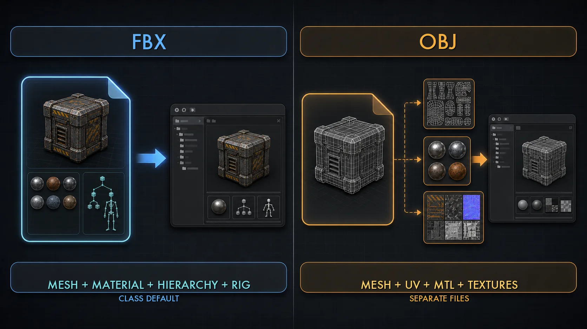
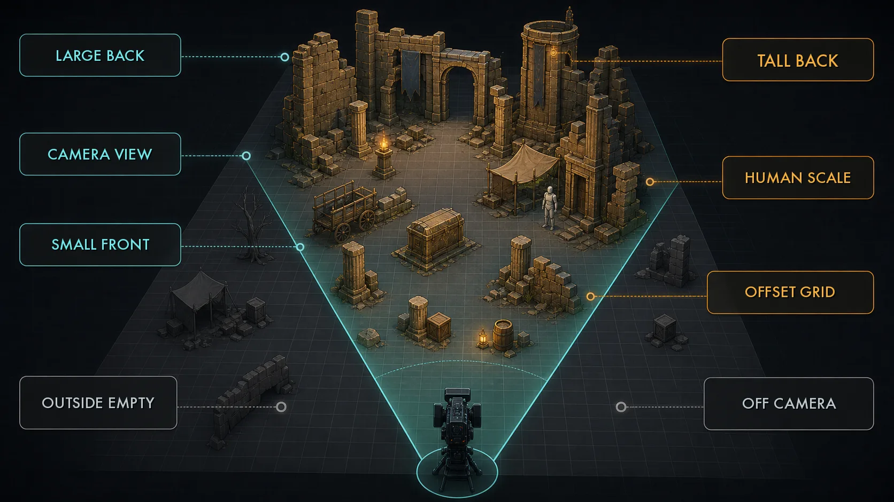

12주차 2교시 — 외부 3D 에셋 임포트 + 최적화 + 씬 통합 (학생용)
관련 문서
| 관계 | 문서 |
|---|---|
| 강의 계획서 | 강의계획서: Game Engine II |
| 강의 아웃라인 | 12주차 아웃라인: 3D 애셋 제작 및 AI 활용 |
| 1교시 핸드아웃 | 12주차 1교시: 생성형 AI 에셋 워크플로우 |
| 3교시 핸드아웃 | 12주차 3교시: 기말 컨셉 환경 블록아웃 |
- FBX와 OBJ의 차이를 이해하고 외부 3D 에셋을 언리얼에 Static Mesh로 임포트할 수 있다
- 스케일이 제각각인 외부 에셋을 마네킹 기준으로 보정하고 머티리얼·텍스처를 재연결할 수 있다
- Nanite / LOD / Collision / 머티리얼 슬롯의 역할을 이해하고 에셋을 점검·최적화할 수 있다
- 반복되는 구조물·소품을 필요할 때 Packed Level Actor로 묶고 원근 배치 룰로 씬에 통합할 수 있다
1교시는 'AI로 에셋을 만든다'까지였습니다. 2교시는 그 결과물 — FBX 파일 — 을 언리얼에 제대로 들여와서 다듬는 시간입니다. 1교시가 개념·도구 지형 위주였다면, 2교시는 언리얼을 직접 다루는 내용입니다.
에셋을 언리얼에 들여올 때 자주 막히는 지점이 세 군데 있습니다. (1) 임포트했더니 스케일이 이상하다, (2) 텍스처가 안 붙어서 회색 덩어리다, (3) 에셋이 너무 무겁거나 콜리전이 이상하다. 2교시는 이 셋을 모두 짚고, 마지막에 여러 에셋을 한 덩어리로 묶는 도구까지 다룹니다.
- AI 3D 에셋은 메인 에셋이 아니라 어디에 쓰는 것이 맞을까요? (배경·소품·디테일 채우기)
- AI 3D 파이프라인 5단계(컨셉 이미지 / image-to-3D / 메시 정리 / 텍스처 / 임포트) 중 2교시가 다루는 단계는? (⑤ 언리얼 임포트)
심화 1 — FBX / OBJ 임포트
FBX 와 OBJ, 무엇이 다른가
AI 3D 도구는 보통 FBX 또는 OBJ로 결과물을 내보냅니다. 두 포맷의 차이를 알고 가야 합니다.

| 포맷 | 담는 정보 | 성격 |
|---|---|---|
| FBX | 메시 + 머티리얼 + 계층 구조 + (스켈레톤·애니메이션) | 게임·영상 업계 표준 전송 포맷 |
| OBJ | 메시 + UV + 기본 머티리얼 참조(.mtl) | 단순·범용. 계층·애니메이션 없음 |
한 줄로 정리하면 FBX는 더 많이 담고, OBJ는 더 단순합니다. 움직이지 않는 배경 소품은 둘 다 가능하지만, FBX가 머티리얼 슬롯 정보를 더 잘 담아 임포트 후 텍스처 연결이 조금 수월합니다. 본 수업 권장은 FBX이며, 강사 에셋 팩도 FBX로 제공됩니다. OBJ는 텍스처가 별도 파일(.mtl + 이미지)로 따로 오므로, 임포트할 때 그 파일들을 같은 폴더에 두어야 합니다.
Step 1 — 에셋을 언리얼에 임포트
임포트 자체는 간단합니다. 4주차에 Megascans 에셋을 가져와 사용한 것과 흐름이 비슷합니다.
작업 1 — Content Browser 로 FBX 드래그
- 탐색기에서 FBX 파일을 찾기 (강사 에셋 팩 또는 직접 만든 파일)
- 언리얼 Content Browser 의 원하는 폴더로 FBX 파일을 드래그앤드롭
- 임포트 옵션 다이얼로그가 뜸
작업 2 — 임포트 옵션 확인
다이얼로그에서 배경 소품 기준으로 확인할 항목:
- Static Mesh 로 임포트 — 움직이지 않는 배경 소품이므로 Static Mesh로 가져옴 (Skeletal Mesh 옵션이 보이면 본 수업 에셋에는 사용하지 않음)
- Nanite — 켜면 임포트 시 Nanite가 활성화됨. 켜도 되고, 나중에 심화 2에서 켜도 됨
- Collision 생성 — 배경 장식 소품·시네마틱 용도면 꺼둬도 됨. 바닥처럼 접촉이 필요한 요소는 예외
- Import Materials / Import Textures — 켜두면 FBX와 함께 제공된 머티리얼·텍스처를 함께 가져옴
- 옵션 확인 후 Import 클릭
UE 5.7에서는 프로젝트 설정·파일 형식에 따라 Interchange 기반 화면과 기존 FBX 임포트 화면이 다르게 보일 수 있습니다. 필드 이름보다 기능(Static Mesh / Nanite / Collision / Materials)으로 옵션을 찾으세요.
임포트가 끝나면 Content Browser에 Static Mesh 에셋이 생깁니다. 더블클릭하면 Static Mesh 에디터가 열리고, 메시를 회전시켜 형태를 확인할 수 있습니다.
Step 2 — 스케일 보정
임포트한 에셋을 viewport에 끌어다 놓으면 크기가 맞지 않은 경우가 많습니다. 지나치게 크거나 작게 들어올 수 있습니다. AI·외부 모델은 스케일이 제각각이며, 첫 번째 참고 영상에서도 '제일 먼저 할 일은 스케일 체크'라고 강조합니다.
언리얼은 1 유닛(uu) = 1cm 기준입니다. 그런데 어떤 도구는 미터로, 어떤 도구는 밀리미터로, 어떤 AI 도구는 '1 정도 크기'로 정규화해 내보냅니다. 단위가 안 맞으면 100배, 1000배씩 차이가 납니다. 스케일을 맞추는 가장 확실한 방법은 마네킹을 옆에 세우는 것입니다.
작업 3 — 마네킹 기준으로 스케일 검증
- viewport에 임포트한 에셋을 배치
- 그 옆에 마네킹(약 1.7m 높이)을 하나 세움 — 사람 크기 기준자 역할. 마네킹은 Content Browser의 Characters 폴더에서 SKM_Manny를 viewport로 드래그
- 에셋과 마네킹을 비교 — 의도한 크기인지 확인 (드럼통이면 사람 허리 높이, 벽이면 사람보다 훨씬 높게 등)
- 크기가 안 맞으면 보정:
- 간단한 방법: 에셋 액터 선택 → Details > Transform > Scale 값 조정
- 권장 방법: Content Browser의 에셋을 다시 임포트하면서 Import Uniform Scale(UE 버전에 따라 Scale Factor 계열 명칭) 값을 조정 (예: 0.01 또는 100). 또는 Static Mesh 에디터에서 기준 스케일을 바로잡음
액터 Scale로 100배 키우면 그 에셋을 다시 쓸 때마다 매번 100배를 해줘야 합니다. 임포트 단계나 Static Mesh 자체에서 바로잡으면 한 번만 하면 됩니다. 3교시에 에셋 여러 개를 쓰므로, 처음에 제대로 잡는 것이 시간을 아낍니다.
마네킹은 Content Browser의 Characters 폴더에 있는 SKM_Manny를 viewport로 끌어다 쓰면 됩니다. 빈 프로젝트라 마네킹이 없으면 Cube를 약 50×50×170cm로 잡아 임시 기준자로 써도 됩니다. 중요한 것은 '사람 크기' 기준 하나를 씬에 두는 것입니다.
Step 3 — 머티리얼·텍스처 재연결
스케일을 맞췄으면 다음 문제는 회색 덩어리입니다. 임포트했더니 색이 없고 회색이거나, 텍스처가 엉뚱하게 붙어 있습니다. 텍스처가 슬롯에 제대로 연결되지 않은 것입니다. 3주차에서 배운 Base Color, Normal, Roughness 노드 연결 지식을 여기서 씁니다.
작업 4 — 머티리얼 점검 + 텍스처 재연결
- 임포트된 에셋의 머티리얼을 더블클릭해 머티리얼 에디터 열기
- 텍스처가 비어 있으면 — Content Browser에서 함께 임포트된 텍스처를 머티리얼 에디터로 드래그
- 텍스처 노드를 알맞은 입력에 연결:
- Base Color 텍스처 → Base Color 입력 (sRGB 켜짐)
- Normal 텍스처 → Normal 입력 (sRGB 꺼짐, Normal 압축 설정)
- Roughness 등 → 해당 입력
- Apply / Save
AI 텍스처는 보통 한 장의 베이스 컬러 텍스처 위주입니다. 소품 워크플로우에서는 image-to-3D 도구가 텍스처를 에셋당 한 세트로 내보내 주므로, Base Color 한 장만 연결해도 회색 덩어리는 면합니다. 첫 번째 영상의 캐릭터 작업은 파츠가 많아 포토샵에서 텍스처를 한 장으로 합쳤지만, 소품은 대개 그 합치기 단계가 필요하지 않습니다. Normal·Roughness는 있으면 연결하고, 없으면 머티리얼 기본값으로 둬도 배경 소품으로는 충분합니다.
텍스처가 어색하면 3주차에서 배운 머티리얼 지식으로 직접 다듬으면 됩니다. AI 텍스처는 베이스를 빠르게 잡아주는 단계입니다.
흔한 문제 — 임포트
| 증상 | 원인 | 해결 |
|---|---|---|
| 임포트한 에셋이 지나치게 크거나 작음 | 단위 불일치 (m / mm / 정규화) | 마네킹 기준 비교 → Import Uniform Scale 또는 Static Mesh 스케일 보정 |
| 에셋이 회색 덩어리 | 텍스처 미연결 | 머티리얼 에디터에서 Base Color 등 텍스처 노드 재연결 |
| 텍스처가 늘어나거나 깨져 보임 | UV가 어긋남 (AI 메시의 전형적 문제) | 배경용이면 감수, 거슬리면 메시 정리 단계 필요 (본 수업 범위 밖) |
| OBJ 임포트 후 텍스처가 아예 없음 | .mtl·이미지 파일이 같은 폴더에 없음 | OBJ·.mtl·텍스처를 한 폴더에 모은 뒤 다시 임포트 |
| 임포트 다이얼로그가 튜토리얼과 달라 보임 | UE 버전·프로젝트 설정에 따라 Interchange/기존 FBX 임포트 화면이 다를 수 있음 | 기능 기준으로 옵션 찾기 — Static Mesh / Nanite / Collision / Materials |
심화 2 — 에셋 최적화
에셋이 씬에 들어왔다고 끝이 아닙니다. AI·외부 에셋은 사람이 모델링한 것보다 '무거운' 경우가 많습니다. 폴리곤이 고르지 않고 종종 과하게 많습니다(1교시의 '정돈되지 않은 와이어'). 씬에 그런 에셋을 수십 개 깔면 뷰포트가 느려지고 13주차 렌더링도 오래 걸립니다. 그래서 에셋을 점검하고 다듬는 최적화 단계가 필요합니다. 네 가지를 봅니다 — Nanite, LOD, Collision, 머티리얼 슬롯.
Nanite — 무거운 메시를 자동으로
Nanite는 언리얼 5의 간판 기능입니다. 폴리곤이 아주 많은 메시도 거리·각도에 맞게 디테일을 자동으로 조절합니다. 카메라에서 멀면 적은 폴리곤으로, 가까우면 많은 폴리곤으로 처리합니다.
AI 3D 메시는 사람 모델링과 달리 폴리곤이 정돈되어 있지 않고 종종 과다합니다. 일반 Static Mesh로 두면 멀리 있어도 무겁습니다. Nanite를 켜면 그 무거운 메시를 엔진이 알아서 처리합니다 — 거친 AI 메시일수록 Nanite의 이득이 큽니다.
작업 5 — Nanite 활성화
- 에셋의 Static Mesh 에디터를 더블클릭으로 열기
- Nanite 설정 항목에서 Nanite 활성화 (Enable Nanite Support 계열)
- 적용 / Save → 메시가 Nanite 메시로 빌드됨
Nanite에도 제약이 있습니다. UE 5.7에서는 지원 범위가 넓어졌지만, 본 수업은 복잡한 캐릭터·변형 메시가 아니라 움직이지 않는 배경 소품 = Static Mesh 기준으로만 다룹니다. 일부 머티리얼·렌더링 기능은 제약이 있을 수 있으므로, Static Mesh 소품에 Nanite를 적용하는 흐름만 확실히 잡으면 됩니다.
LOD — Nanite 미사용 메시의 거리별 디테일
LOD(Level Of Detail)는 메시를 거리별로 여러 단계 만들어두고, 가까우면 디테일 높은 버전, 멀면 낮은 버전을 보여주는 방식입니다. Nanite가 없던 시절부터 쓰던 최적화입니다.
Nanite를 켠 Static Mesh는 거리별 디테일 처리를 Nanite가 자동으로 맡으므로, 대부분 직접 LOD를 만들 필요가 줄어듭니다. 다만 Nanite를 쓰지 않는 메시나, 특정 머티리얼·플랫폼 제약이 있는 에셋은 LOD로 가볍게 할 수 있습니다.
작업 6 — LOD 확인 / 자동 생성
- Static Mesh 에디터의 LOD 설정 패널 열기
- LOD 단계 수를 늘리거나, 자동 생성(Auto LOD) 옵션 사용
- LOD Group 프리셋(예: LargeProp, SmallProp)을 지정하면 적절한 단계가 자동 설정됨
정리하면, Nanite를 켠 Static Mesh는 LOD를 보통 그대로 둬도 됩니다. LOD는 'Nanite를 쓰지 않는 메시'를 위한 백업 최적화로 이해하면 됩니다.
Collision — 장식 소품은 줄이고, 접촉 요소만 단순하게
Collision(충돌 영역)은 캐릭터나 물체가 에셋에 부딪히는 물리적 경계입니다.
본 수업은 시네마틱을 만듭니다. 카메라와 캐릭터 애니메이션이 트랙으로 미리 짜인 영상이며, 캐릭터가 물리적으로 벽에 부딪히는 게임플레이를 만드는 수업이 아닙니다. 그래서 배경 장식 소품의 콜리전은 보통 필요하지 않습니다.
오히려 AI·외부 에셋은 임포트할 때 콜리전이 엉뚱하게 — 실제 모양보다 훨씬 큰 박스로 — 생기는 경우가 있습니다. 그것이 있으면 캐릭터가 근처에 갔을 때 이상하게 걸립니다. 그래서 시네마틱 용도면 콜리전을 생성하지 않거나 비활성화하는 것이 기본입니다.
작업 7 — Collision 확인 (필요 시에만)
- Static Mesh 에디터에서 콜리전 보기를 켜서 현재 콜리전 모양 확인
- 시네마틱 용도 → 콜리전이 거슬리면 제거하거나 임포트 시 미생성
- 예외 — 캐릭터가 그 환경 위를 실제로 걷거나 발을 디디는 컷이 있으면, 그 바닥 메시에만 단순 콜리전(박스·캡슐)을 추가
배경 장식 소품은 콜리전을 꺼도 되는 경우가 많고, 캐릭터가 밟고 서는 바닥이나 접촉이 필요한 요소만 단순 콜리전으로 처리하면 충분합니다.
머티리얼 슬롯 + 삼각형 카운트 점검
Static Mesh 에디터를 열면 정보 패널에 삼각형(Triangle) 카운트가 보입니다. 이것이 메시의 무게입니다. 배경 소품 하나가 수십만 삼각형이면 과한 편이므로, Nanite 적용을 검토하거나 화면에서 거슬리면 더 단순한 에셋으로 교체를 고려합니다.
머티리얼 슬롯은 에셋 하나에 머티리얼이 여러 개 붙어 있을 수 있습니다(4주차 Megascans 에셋에서 본 것). 슬롯이 불필요하게 많으면 정리하고, 같은 재질이면 하나로 합칩니다. 슬롯이 적을수록 가볍고 관리가 쉽습니다.
Nanite(무거운 메시 자동 처리) · LOD(Nanite 미사용 메시의 백업) · Collision(장식 소품은 줄이고, 접촉 요소만 단순하게) · 머티리얼 슬롯·삼각형 카운트(점검·정리). 핵심은 'AI 에셋은 무거울 수 있으니 Nanite를 검토하고, 콜리전은 필요한 것만, 슬롯은 정리한다'입니다.
심화 3 — 씬 통합: Packed Level Actor + 배치 룰
Packed Level Actor — 반복 소품이 있을 때 쓰는 도구
심화 3은 에셋을 씬에 통합하는 단계입니다. 먼저 짚을 점 — 이 도구는 '반복되는 구조물·소품 세트가 있을 때 쓰는 도구' 입니다. 본인 환경에 서로 다른 소품 5개만 있다면 쓰지 않아도 됩니다. 똑같은 박스 20개, 똑같은 기둥 10개처럼 같은 것이 여러 번 나올 때 진가가 나옵니다.
그 도구가 Packed Level Actor입니다. 두 번째 참고 영상(1,200만 원 영상)에서 반복 소품을 묶어 다루던 방식이 이 흐름입니다 — '소스들을 하나의 블루프린트 형태로 묶어서 한 번에 쓴다'고 했습니다.
예를 들어 폐허 씬에 '잔해 더미'(부서진 벽돌 + 파이프 + 박스 조합)를 만들어 씬 곳곳에 10번 배치한다고 합시다. 하나하나 복사하면 관리하기 어려워집니다. Packed Level Actor로 한 번 묶으면 그 묶음을 도장 찍듯 배치할 수 있고, 원본 하나를 고치면 전부 반영됩니다. 게다가 엔진이 내부적으로 인스턴싱 처리를 해서 더 가볍습니다.
Step 1 — Packed Level Actor 만들기
작업 8 — 액터 묶기
- viewport 또는 Outliner에서 묶을 액터 여러 개를 다중 선택 (Ctrl+클릭)
- 우클릭 → Level → Create Packed Level Actor
- 저장 경로·이름 지정 (예:
PLA_RubblePile) - 선택했던 액터들이 하나의 Packed Level Actor로 묶임
우클릭 메뉴에 비슷한 항목이 두 개 있습니다 — Create Level Instance 와 Create Packed Level Actor. 둘 다 액터를 묶지만, 본 수업에서 쓸 것은 Packed Level Actor 입니다. 내부적으로 인스턴싱 처리까지 해서 반복 배치에 가볍습니다. Level Instance는 더 단순한 묶음입니다. 메뉴에서 'Packed'가 붙은 쪽을 고르세요.
이 PLA_RubblePile을 Content Browser에서 viewport로 드래그하면 잔해 더미 묶음이 통째로 배치됩니다. 10번 배치하면 잔해 더미 10개이고, 원본 한 번을 수정하면 10개가 모두 바뀝니다.
Packed Level Actor 의 함정 — 편집 모드
자주 막히는 지점이 하나 있습니다 — '묶었더니 안에 있는 박스 하나만 옮기고 싶은데 안 된다.'
Packed Level Actor는 묶은 순간 하나의 덩어리가 됩니다. 안에 든 개별 요소를 수정하려면 편집 모드로 들어가야 합니다.
작업 9 — Packed Level Actor 내부 편집
- Packed Level Actor를 더블클릭(또는 우클릭 → Edit 계열 메뉴)해 편집 모드 진입
- 편집 모드 안에서 개별 액터를 옮기거나 추가·삭제
- 편집이 끝나면 편집 모드를 빠져나옴(저장) → 그 변경이 모든 인스턴스에 반영
기억할 것 — 묶은 뒤 수정이 안 되는 것이 아니라, 편집 모드 안에서만 수정하는 것입니다. 들어갔다 나오는 흐름만 익히면 됩니다. 반복 소품이 없다면 이 도구 자체를 쓰지 않아도 됩니다. 3교시에서도 Packed Level은 시간이 남을 때의 확장 작업입니다.
에셋 배치 룰
씬 통합의 마지막은 에셋을 어떻게 배치하느냐입니다. 의도 없이 늘어놓는 것과 의도를 갖고 배치하는 것은 결과가 완전히 다릅니다. 1,200만 원 영상이 강조하는 배치 룰의 핵심입니다.

| 배치 룰 | 내용 |
|---|---|
| 원근 룰 | 뒤쪽에 키 큰 것, 카메라 앞쪽으로 올수록 키 작은 것. 공간 깊이감이 살아남 |
| 카메라 기준 배치 | 시네마틱은 카메라가 보는 게 전부. 카메라에 안 잡히는 곳은 비워도 됨 |
| 불규칙성 | 너무 규칙적으로 줄 세우지 말고 살짝 어긋나게 — 자연스러움 |
| 스케일 기준자 | 마네킹(약 1.7m)을 계속 옆에 두고 사람 크기로 공간감 검증 |
원근 룰 — 뒤에 큰 것, 앞에 작은 것. 영상에서도 '카메라 앞쪽으로 올수록 키 작은 것을 배치하는 룰을 지키라'고 강조합니다. 이렇게 하면 화면에 깊이감이 생깁니다.
카메라 기준 배치 — 시네마틱의 핵심입니다. 게임 레벨은 플레이어가 어디든 갈 수 있으니 다 채워야 하지만, 시네마틱은 카메라가 비추는 곳만 신경 쓰면 됩니다. 카메라 뒤쪽, 화면 밖은 비워둬도 보이지 않습니다. 시간을 카메라가 보는 곳에 쓰세요.
불규칙성 — 박스를 자로 잰 듯 정렬하면 가짜처럼 보입니다. 살짝 돌리고, 살짝 밀어 어긋나게 두면 실제 공간처럼 보입니다.
스케일 기준자 — 심화 1에서 한 마네킹 세우기를 배치 내내 유지합니다. '내가 이 공간에 서 있다면'을 상상하며, 사람 크기 대비 문이 적당한지 천장이 적당한지 계속 확인합니다.
배치는 한 번에 완벽할 수 없습니다. 어색하면 과감하게 지우고 다시 배치합니다. 깔고 → 카메라로 보고 → 어색하면 고치고 — 이 반복이 정상입니다.
3교시 실습 미리보기
본인 기말 시네마틱 컨셉을 정하고, 그 환경을 ① 더미 박스로 블록아웃한 뒤 ② 강사 에셋 팩(또는 본인 AI 생성 에셋)에서 1개 이상을 임포트·보정하고 ③ 원근 룰로 배치해 환경 베이스를 만든다.
미션을 분명히 합니다.
- 정식 제출 과제가 아닙니다. 채점하지 않습니다. 12주차는 과제가 없는 주차입니다. 그럼에도 하는 이유는, 이것이 기말 프로젝트의 환경 베이스가 되기 때문입니다. 14~16주차에 기말 시네마틱을 만들 때 환경을 미리 잡아두면 훨씬 수월합니다.
- 기말 컨셉은 자유입니다. 10·11주차에 만든 격투 시네마틱을 액션 장면으로 이어가도 되고, 새 컨셉을 잡아도 됩니다.
- 오늘 배운 것을 다 쓸 필요는 없습니다. 기본 완성은 블록아웃 + 에셋 1개 이상 임포트·보정 + 원근 배치 + 스크린샷 1장입니다. Packed Level로 묶거나 Nanite·Collision까지 점검하는 것은 시간이 남는 경우의 확장 작업입니다.
8주차 중간고사 때 만든 스토리보드를 꺼내세요. 거기 이미 시네마틱 컨셉이 그려져 있습니다. 그 스토리보드에서 배경이 잘 드러난 컷 하나를 골라 — 그것이 만들 환경입니다. 그 컷을 보며 공간 키워드 3개를 메모하세요(예: '버려진 실내 / 위에서 빛이 들어옴 / 바닥에 잔해'). 이 세 단어가 블록아웃의 설계도입니다.
스토리보드가 없거나 컨셉을 바꾸고 싶으면, 1교시에서 본 AI 이미지 생성으로 컨셉 이미지를 하나 생성해도 됩니다. 중요한 것은 3교시 시작 때 '어떤 공간을 만들지'가 한 줄이라도 정해져 있는 것입니다. 강사 에셋 팩(컨셉 2~3종의 배경·소품 FBX)은 LMS에 올라가며, 본인 컨셉에 가까운 팩을 받아두면 3교시에 바로 임포트부터 시작할 수 있습니다.
다음 시간 예고
외부 에셋은 임포트하고, 스케일·머티리얼을 바로잡고, 최적화하고, 배치 룰로 통합한다.
오늘 흐름 — FBX 임포트 → 마네킹으로 스케일 보정 → 머티리얼 재연결 → Nanite로 최적화 → (반복 소품은) Packed Level로 묶기 → 원근 룰로 배치. 이것이 3교시에 본인 환경을 만들 때 그대로 쓰는 절차입니다. 쉬는 시간에 8주차 스토리보드에서 배경 컷 하나를 골라 공간 키워드 3개를 메모해두고, 강사 에셋 팩도 LMS에서 미리 받아두면 3교시가 빨라집니다.